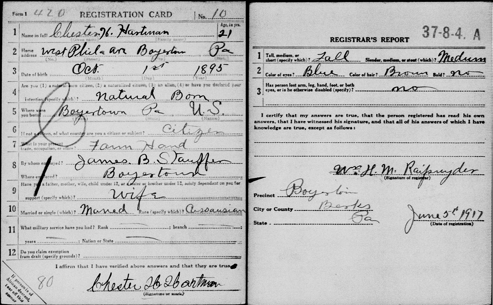
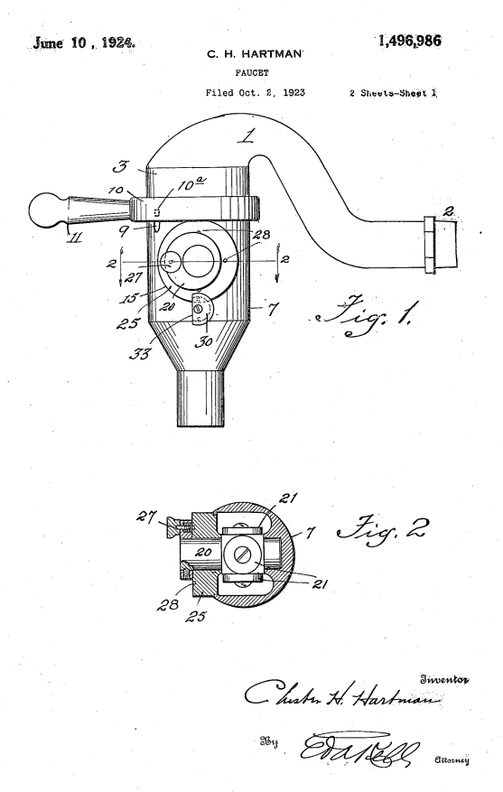
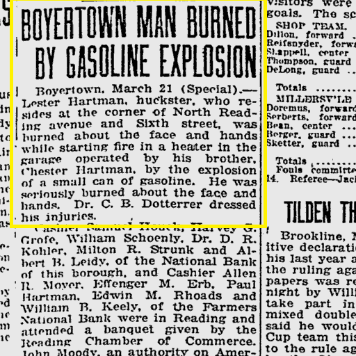
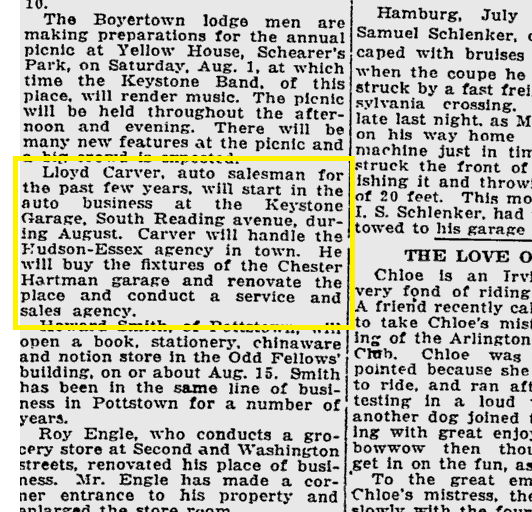
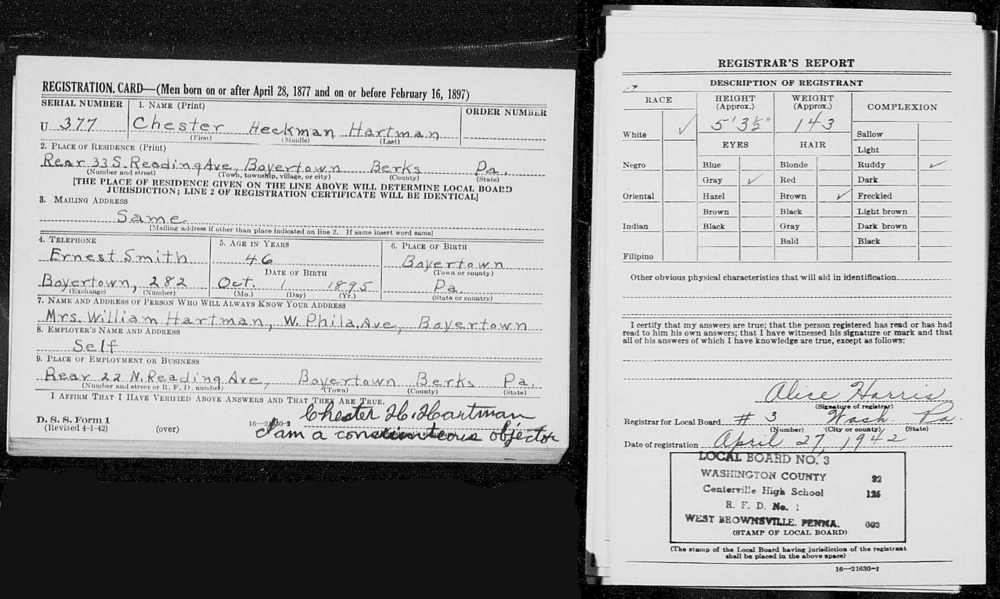
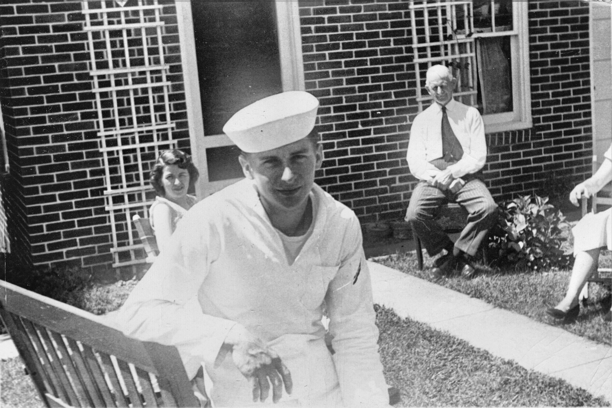
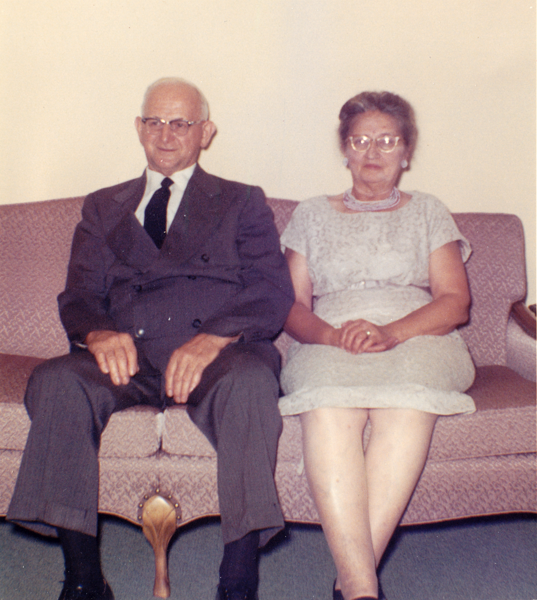
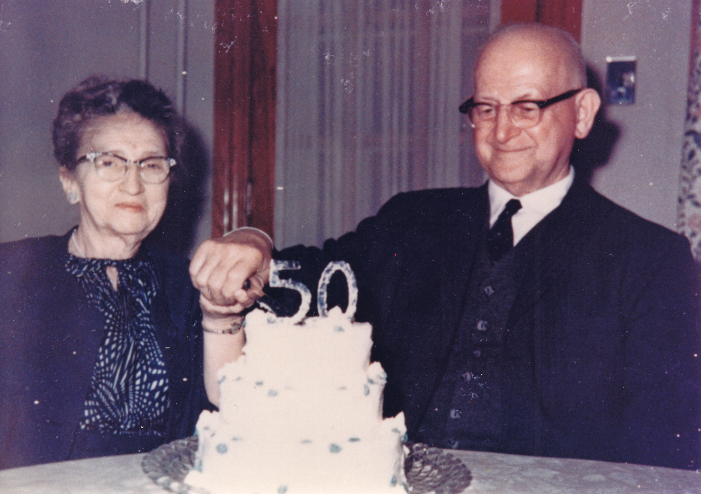
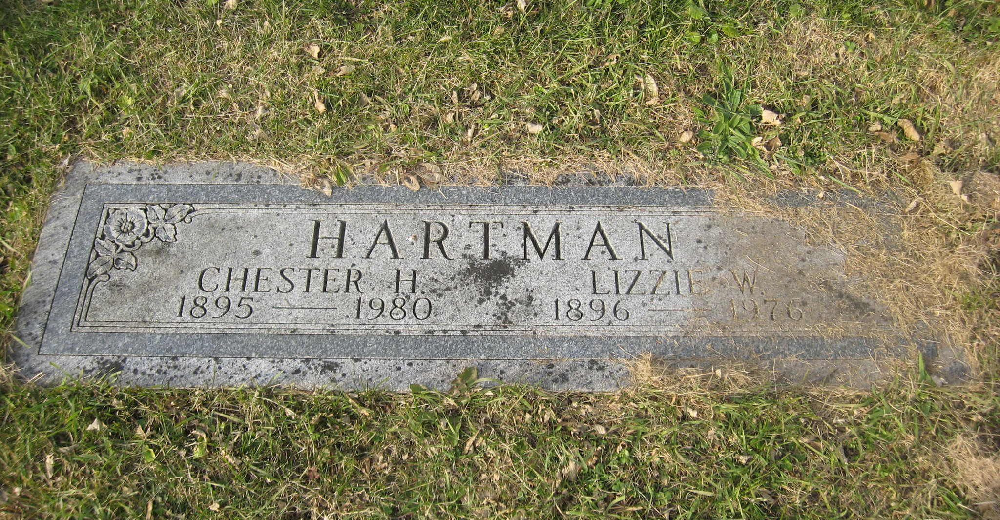

married at Elkton, MD in 1917
Chester Heckman HARTMAN
born 01 Oct 1895 at Boyertown, PA
died 01 Nov 1980
born 01 Oct 1895 at Boyertown, PA
died 01 Nov 1980
Lizzie Weiss HAUSMAN
born 22 June 1896 at Colebrookdale, PA
died 13 March 1976 at 120 N. Reading St., Boyertown, PA
born 22 June 1896 at Colebrookdale, PA
died 13 March 1976 at 120 N. Reading St., Boyertown, PA
Children of Chester HARTMAN and Lizzie HAUSMAN
Edith H. HARTMAN
born 15 Oct 1917
died 16 Apr 1970 at age 52
born 15 Oct 1917
died 16 Apr 1970 at age 52
Jeannette HARTMAN
born 23 Oct 1919 at Boyertown, PA
died 01 Oct 2014 at Yardley, PA
born 23 Oct 1919 at Boyertown, PA
died 01 Oct 2014 at Yardley, PA
Lillian HARTMAN
born 01 Mar 1922 at Boyertown, PA
died 14 Apr 2006
born 01 Mar 1922 at Boyertown, PA
died 14 Apr 2006
Lewis HARTMAN
born 22 Jun 1926 at Boyertown, PA
died 06 Oct 2002 at Bally, PA
born 22 Jun 1926 at Boyertown, PA
died 06 Oct 2002 at Bally, PA
Titus HARTMAN
born 26 Oct 1930
died 11 Dec 2013 at Pine Grove, PA
born 26 Oct 1930
died 11 Dec 2013 at Pine Grove, PA
David HARTMAN
born 05 Jul 1936
died 07 Jul 2019
born 05 Jul 1936
died 07 Jul 2019
The April 9, 1917 edition of the Reading Eagle newspaper reported that Chester HARTMAN of Boyertown and Lizzie HAUSMAN of Gabelsville had been married at Elkton, Maryland.

Chester registered for the military draft on Jun 5, 1917 at age 21. This record indicates that he resided with Lizzie on West Philadelphia Avenue and was employed as a farm hand in Boyertown by James B. Stauffer.

On October 2, 1923, Chester Hartman filed an application for a US patent on a faucet. The corresponding patent US 1,496,986 was issued on June 10, 1924.

The March 21, 1924 edition of the Reading Eagle newspaper reported that Chester's twin brother Lester had been burned in a gasoline fire at Chester's auto repair garage.
On July 30 of the following year, the Reading Eagle reported that the fixtures of Chester's garage were to be sold to another business.
On July 30 of the following year, the Reading Eagle reported that the fixtures of Chester's garage were to be sold to another business.


Chester registered again for the military draft on April 27, 1942 at age 46. At this time, he and his family resided at the rear unit of 33 South Reading Avenue, and the record indicates that he was employed at the rear unit of 22 North Reading Avenue. Chester registered this time as a conscientious objector.

In their later years, Chester and Lizzie lived at 120 North Reading Street in Boyertown. Chester and Titus HARTMAN are pictured in the back yard of this home during the early 1950s.

Chester and Lizzie are pictured in their home and on the occasion of their 50th wedding anniversary.


[gray boxes above indicate that the person is buried at Fairview Cemetery in Boyertown, PA]
Chester and Lizzie are buried together at Fairview Cemetery, Boyertown, PA. Their children Edith and Lewis are buried nearby.
Chester and Lizzie are buried together at Fairview Cemetery, Boyertown, PA. Their children Edith and Lewis are buried nearby.
